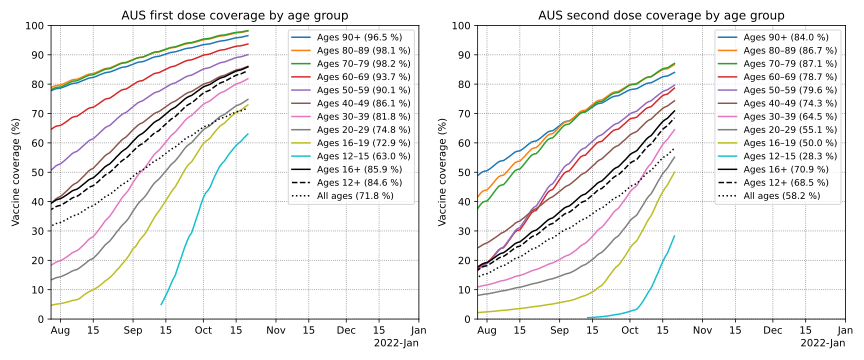
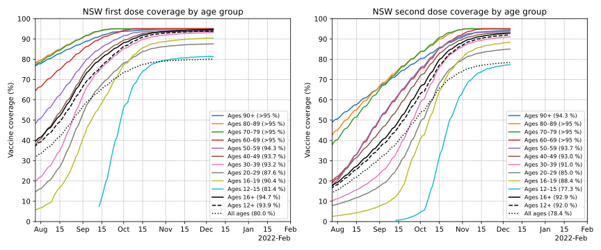
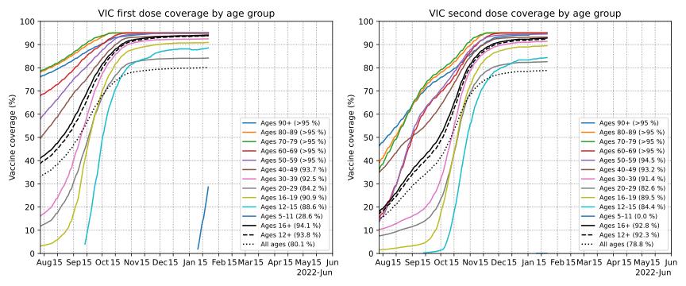
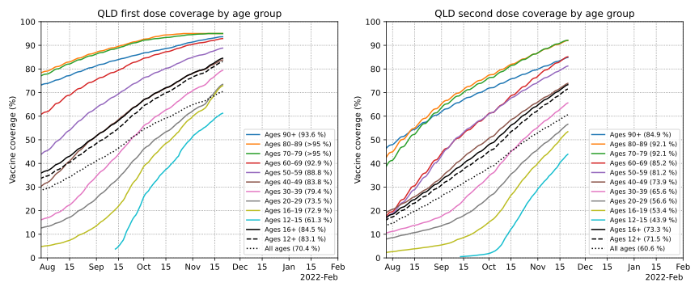
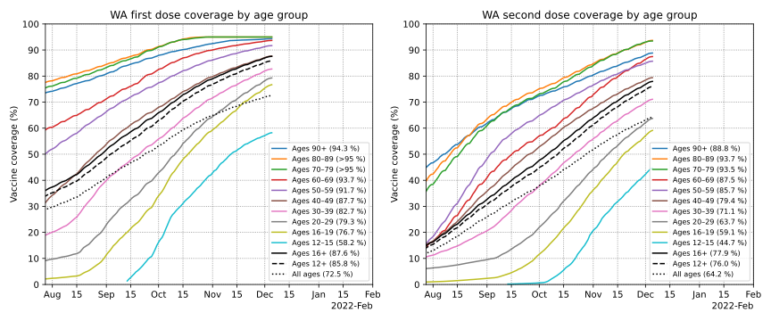
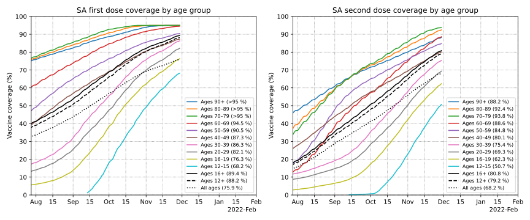
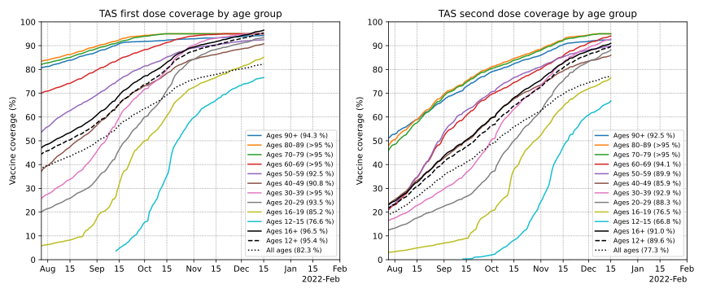
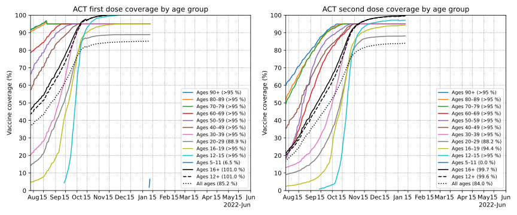
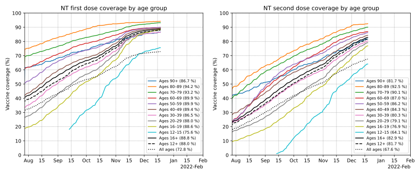

Updates daily in the afternoon
Australian COVID-19 vaccination rollout
Progression of the COVID outbreak in New Zealand
Progression of the COVID outbreak in Victoria
Progression of the COVID outbreak in the Australian Capital Territory
Progression of the COVID outbreak in New South Wales
The road to a COVID-free Victoria (old 2020 second wave plots)
Contents
Daily doses by administration channel
Below is a plot of 7-day average of daily vaccine doses administered in Australia by administration channel, showing the daily number of doses administered by state vaccination clinics, and by GPs and in federally operated aged and disability care. The 7-day average is further smoothed to remove day-to-day random fluctuations using Gaussian smoothing with σ=1 days.
Projected doses are based on a fit to the last 4 weeks of first doses assuming exponential approach toward some maximum uptake level, the assumption that second doses will follow first-doses after the current average first-to-second dosing interval, and that third doses will follow after the current average second-to-third dosing interval.
Data note 1: 80,560 GP-administered doses were reported on April 19th that were administered "prior to April 17". These have been incorporated into the data by spreading them over the period from March 22nd (start of phase 1b) to April 16th in proportion to the daily rate of GP-adminsitered doses on each day.
Data note 2: A correction to of -9,260 doses to VIC's state-clinic numbers was made on May 25th. These have been incorporated into the data by spreading them over the period from March 22nd (start of phase 1b) to April May 23rd in proportion to the daily rate of VIC state-clinic-adminsitered doses on each day.

Daily doses by weekday
Below is a plot of national daily doses by weekday, for the past five weeks. No averaging or smoothing has been done.

Cumulative doses
Below is a simple plot of cumulative doses in Australia over time by administration channel, showing the cumulative number of doses administered by state vaccination clinics, and by GPs and in federally operated aged and disability care. Australia aims to vaccinate all eligible people with at least one dose by the end of 2021.
Following that is a plot of cumulative first, second, and third doses administered, with projections.
Projected doses are based on a fit to the last 4 weeks of first doses assuming exponential approach toward some maximum uptake level, the assumption that second doses will follow first-doses after the current average first-to-second dosing interval, and that third doses will follow after the current average second-to-third dosing interval.


Note: The percentage targets in the above plot show the dates when 70% and 80% of the eligible population (ages 12+) received/are projected to have received two doses. However, in the national plan, these targets are framed in terms of the 16+ population. Thus these projected dates assume that vaccination coverage in the 12–15 age group is similar at these points to that of the 16+ age group.
First and second dose coverage by age group
Below are plots of the percentage of each 10-year age group that has had a first and second administered, as well as the weekly rate of uptake as a percentage of each age group. Note that first dose data by age group is only available from May 9th, and second dose data from June 30th. The 12–15 and 16–19 age groups are kept separate rather than as a single 12–19 group, due to the 12–15 age group becoming eligible much later, making it more interesting to show as a separate group.


First and second dose coverage by state/territory
Below are plots of the percentage of the resident population aged 12+ in each state/territory that has had a first and second dose administered, as well as the weekly rate of uptake, as a percentage of each state/territory's age 12+ population. For a more detailed age breakdown, including 16+ coverage by state, see the next section.


First and second dose coverage by state/territory and age group
Below are plots of the percentage of the resident population in each state and territory that has had a first and second dose administered, by age group.
Included are also projections of when various targets would be met, assuming the current seven-day average rate of first-doses, and the current average dosing interval in each state. These should be taken with a grain of salt, as the rate of first-doses, as well as the dosing intervals, may change.
National

Ages 16+
93.8% first-dose coverage 💉
90.4% second-dose coverage 💉💉
0.07%/day first-dose rate
0.17%/day second-dose rate
35 days average dosing interval
1st dose targets 💉 (@ current 1st dose rate)
60%: ✅ September 1st (108 days ago)
70%: ✅ September 16th (93 days ago)
80%: ✅ October 5th (74 days ago)
90%: ✅ November 11th (37 days ago)
2nd dose targets 💉💉 (@ current 1st dose rate + interval)
60%: ✅ October 7th (72 days ago)
70%: ✅ October 19th (60 days ago)
80%: ✅ November 5th (43 days ago)
90%: ✅ December 16th (2 days ago)
|
Ages 12+
93.1% first-dose coverage 💉
89.5% second-dose coverage 💉💉
0.07%/day first-dose rate
0.18%/day second-dose rate
35 days average dosing interval
1st dose targets 💉 (@ current 1st dose rate)
60%: ✅ September 6th (103 days ago)
70%: ✅ September 21st (88 days ago)
80%: ✅ October 8th (71 days ago)
90%: ✅ November 16th (32 days ago)
2nd dose targets 💉💉 (@ current 1st dose rate + interval)
60%: ✅ October 11th (68 days ago)
70%: ✅ October 22nd (57 days ago)
80%: ✅ November 9th (39 days ago)
90%: December 21st (3 days)
|
New South Wales

Ages 16+
94.9% first-dose coverage 💉
93.4% second-dose coverage 💉💉
0.02%/day first-dose rate
0.04%/day second-dose rate
51 days average dosing interval
1st dose targets 💉 (@ current 1st dose rate)
60%: ✅ August 23rd (117 days ago)
70%: ✅ September 1st (108 days ago)
80%: ✅ September 14th (95 days ago)
90%: ✅ October 8th (71 days ago)
2nd dose targets 💉💉 (@ current 1st dose rate + interval)
60%: ✅ September 25th (84 days ago)
70%: ✅ October 6th (73 days ago)
80%: ✅ October 16th (63 days ago)
90%: ✅ November 8th (40 days ago)
|
Ages 12+
94.1% first-dose coverage 💉
92.5% second-dose coverage 💉💉
0.02%/day first-dose rate
0.04%/day second-dose rate
52 days average dosing interval
1st dose targets 💉 (@ current 1st dose rate)
60%: ✅ August 26th (114 days ago)
70%: ✅ September 6th (103 days ago)
80%: ✅ September 21st (88 days ago)
90%: ✅ October 13th (66 days ago)
2nd dose targets 💉💉 (@ current 1st dose rate + interval)
60%: ✅ September 29th (80 days ago)
70%: ✅ October 9th (70 days ago)
80%: ✅ October 19th (60 days ago)
90%: ✅ November 13th (35 days ago)
|
Victoria

Ages 16+
93.7% first-dose coverage 💉
92.1% second-dose coverage 💉💉
0.02%/day first-dose rate
0.06%/day second-dose rate
44 days average dosing interval
1st dose targets 💉 (@ current 1st dose rate)
60%: ✅ September 4th (105 days ago)
70%: ✅ September 16th (93 days ago)
80%: ✅ September 29th (80 days ago)
90%: ✅ October 22nd (57 days ago)
2nd dose targets 💉💉 (@ current 1st dose rate + interval)
60%: ✅ October 11th (68 days ago)
70%: ✅ October 20th (59 days ago)
80%: ✅ October 30th (49 days ago)
90%: ✅ November 24th (24 days ago)
|
Ages 12+
93.4% first-dose coverage 💉
91.6% second-dose coverage 💉💉
0.02%/day first-dose rate
0.06%/day second-dose rate
44 days average dosing interval
1st dose targets 💉 (@ current 1st dose rate)
60%: ✅ September 8th (101 days ago)
70%: ✅ September 20th (89 days ago)
80%: ✅ October 2nd (77 days ago)
90%: ✅ October 25th (54 days ago)
2nd dose targets 💉💉 (@ current 1st dose rate + interval)
60%: ✅ October 13th (66 days ago)
70%: ✅ October 22nd (57 days ago)
80%: ✅ November 1st (47 days ago)
90%: ✅ November 29th (19 days ago)
|
Queensland

Ages 16+
89.5% first-dose coverage 💉
84.2% second-dose coverage 💉💉
0.19%/day first-dose rate
0.46%/day second-dose rate
29 days average dosing interval
1st dose targets 💉 (@ current 1st dose rate)
60%: ✅ September 19th (90 days ago)
70%: ✅ October 10th (69 days ago)
80%: ✅ November 9th (39 days ago)
90%: December 20th (2 days)
2nd dose targets 💉💉 (@ current 1st dose rate + interval)
60%: ✅ October 22nd (57 days ago)
70%: ✅ November 13th (35 days ago)
80%: ✅ December 8th (10 days ago)
90%: January 18th (31 days)
|
Ages 12+
88.2% first-dose coverage 💉
82.7% second-dose coverage 💉💉
0.19%/day first-dose rate
0.47%/day second-dose rate
29 days average dosing interval
1st dose targets 💉 (@ current 1st dose rate)
60%: ✅ September 24th (85 days ago)
70%: ✅ October 16th (63 days ago)
80%: ✅ November 12th (36 days ago)
90%: December 27th (9 days)
2nd dose targets 💉💉 (@ current 1st dose rate + interval)
60%: ✅ October 27th (52 days ago)
70%: ✅ November 17th (31 days ago)
80%: ✅ December 13th (5 days ago)
90%: January 25th (38 days)
|
Western Australia

Ages 16+
89.6% first-dose coverage 💉
81.6% second-dose coverage 💉💉
0.16%/day first-dose rate
0.28%/day second-dose rate
38 days average dosing interval
1st dose targets 💉 (@ current 1st dose rate)
60%: ✅ September 19th (90 days ago)
70%: ✅ October 10th (69 days ago)
80%: ✅ November 5th (43 days ago)
90%: December 20th (2 days)
2nd dose targets 💉💉 (@ current 1st dose rate + interval)
60%: ✅ October 25th (54 days ago)
70%: ✅ November 15th (33 days ago)
80%: ✅ December 13th (5 days ago)
90%: January 27th (40 days)
|
Ages 12+
87.9% first-dose coverage 💉
79.8% second-dose coverage 💉💉
0.18%/day first-dose rate
0.29%/day second-dose rate
37 days average dosing interval
1st dose targets 💉 (@ current 1st dose rate)
60%: ✅ September 25th (84 days ago)
70%: ✅ October 15th (64 days ago)
80%: ✅ November 11th (37 days ago)
90%: December 29th (11 days)
2nd dose targets 💉💉 (@ current 1st dose rate + interval)
60%: ✅ October 30th (49 days ago)
70%: ✅ November 19th (29 days ago)
80%: December 18th (0 days)
90%: February 4th (48 days)
|
South Australia

Ages 16+
91.6% first-dose coverage 💉
86.3% second-dose coverage 💉💉
0.08%/day first-dose rate
0.28%/day second-dose rate
30 days average dosing interval
1st dose targets 💉 (@ current 1st dose rate)
60%: ✅ September 14th (95 days ago)
70%: ✅ October 5th (74 days ago)
80%: ✅ October 26th (53 days ago)
90%: ✅ December 3rd (15 days ago)
2nd dose targets 💉💉 (@ current 1st dose rate + interval)
60%: ✅ October 19th (60 days ago)
70%: ✅ November 6th (42 days ago)
80%: ✅ November 27th (21 days ago)
90%: January 2nd (15 days)
|
Ages 12+
90.6% first-dose coverage 💉
85.0% second-dose coverage 💉💉
0.09%/day first-dose rate
0.30%/day second-dose rate
30 days average dosing interval
1st dose targets 💉 (@ current 1st dose rate)
60%: ✅ September 20th (89 days ago)
70%: ✅ October 9th (70 days ago)
80%: ✅ November 1st (47 days ago)
90%: ✅ December 11th (7 days ago)
2nd dose targets 💉💉 (@ current 1st dose rate + interval)
60%: ✅ October 25th (54 days ago)
70%: ✅ November 10th (38 days ago)
80%: ✅ December 1st (17 days ago)
90%: January 10th (23 days)
|
Tasmania

Ages 16+
96.8% first-dose coverage 💉
91.6% second-dose coverage 💉💉
0.14%/day first-dose rate
0.22%/day second-dose rate
33 days average dosing interval
1st dose targets 💉 (@ current 1st dose rate)
60%: ✅ August 31st (109 days ago)
70%: ✅ September 17th (92 days ago)
80%: ✅ October 10th (69 days ago)
90%: ✅ November 4th (44 days ago)
2nd dose targets 💉💉 (@ current 1st dose rate + interval)
60%: ✅ October 3rd (76 days ago)
70%: ✅ October 20th (59 days ago)
80%: ✅ November 10th (38 days ago)
90%: ✅ December 10th (8 days ago)
|
Ages 12+
95.7% first-dose coverage 💉
90.2% second-dose coverage 💉💉
0.14%/day first-dose rate
0.23%/day second-dose rate
33 days average dosing interval
1st dose targets 💉 (@ current 1st dose rate)
60%: ✅ September 7th (102 days ago)
70%: ✅ September 23rd (86 days ago)
80%: ✅ October 15th (64 days ago)
90%: ✅ November 14th (34 days ago)
2nd dose targets 💉💉 (@ current 1st dose rate + interval)
60%: ✅ October 7th (72 days ago)
70%: ✅ October 27th (52 days ago)
80%: ✅ November 14th (34 days ago)
90%: ✅ December 17th (1 days ago)
|
Australian Capital Territory

Ages 16+
100.8% first-dose coverage 💉
99.3% second-dose coverage 💉💉
0.02%/day first-dose rate
0.04%/day second-dose rate
50 days average dosing interval
1st dose targets 💉 (@ current 1st dose rate)
60%: ✅ August 23rd (117 days ago)
70%: ✅ September 6th (103 days ago)
80%: ✅ September 18th (91 days ago)
90%: ✅ September 29th (80 days ago)
2nd dose targets 💉💉 (@ current 1st dose rate + interval)
60%: ✅ September 24th (85 days ago)
70%: ✅ October 7th (72 days ago)
80%: ✅ October 17th (62 days ago)
90%: ✅ October 27th (52 days ago)
|
Ages 12+
100.7% first-dose coverage 💉
99.1% second-dose coverage 💉💉
0.02%/day first-dose rate
0.04%/day second-dose rate
51 days average dosing interval
1st dose targets 💉 (@ current 1st dose rate)
60%: ✅ August 27th (113 days ago)
70%: ✅ September 11th (98 days ago)
80%: ✅ September 22nd (87 days ago)
90%: ✅ October 1st (78 days ago)
2nd dose targets 💉💉 (@ current 1st dose rate + interval)
60%: ✅ September 29th (80 days ago)
70%: ✅ October 10th (69 days ago)
80%: ✅ October 19th (60 days ago)
90%: ✅ October 28th (51 days ago)
|
Northern Territory

Ages 16+
88.8% first-dose coverage 💉
82.8% second-dose coverage 💉💉
0.06%/day first-dose rate
0.25%/day second-dose rate
37 days average dosing interval
1st dose targets 💉 (@ current 1st dose rate)
60%: ✅ September 11th (98 days ago)
70%: ✅ October 15th (64 days ago)
80%: ✅ November 7th (41 days ago)
90%: January 7th (20 days)
2nd dose targets 💉💉 (@ current 1st dose rate + interval)
60%: ✅ October 20th (59 days ago)
70%: ✅ November 12th (36 days ago)
80%: ✅ December 8th (10 days ago)
90%: February 13th (57 days)
|
Ages 12+
88.0% first-dose coverage 💉
81.6% second-dose coverage 💉💉
0.07%/day first-dose rate
0.27%/day second-dose rate
37 days average dosing interval
1st dose targets 💉 (@ current 1st dose rate)
60%: ✅ September 18th (91 days ago)
70%: ✅ October 20th (59 days ago)
80%: ✅ November 9th (39 days ago)
90%: January 18th (31 days)
2nd dose targets 💉💉 (@ current 1st dose rate + interval)
60%: ✅ October 27th (52 days ago)
70%: ✅ November 17th (31 days ago)
80%: ✅ December 13th (5 days ago)
90%: February 24th (68 days)
|
Data sources and contact
Source for daily/cumulative dose numbers: covidlive.com.au.
Source for first doses by age group prior to June 30th: Department of Health, data extracted from government materials by covidbaseau.com.
Source for first and second doses by age group from June 30th: Department of Health, data extracted from government materials by Ken Tsang
Population data from the Australian Bureau of Statistics Estimated Resident Population, June 2020
Plots and analysis by Chris Billington. Contact: chrisjbillington [at] gmail [dot] com
Python script for producing the plots is available on GitHub.